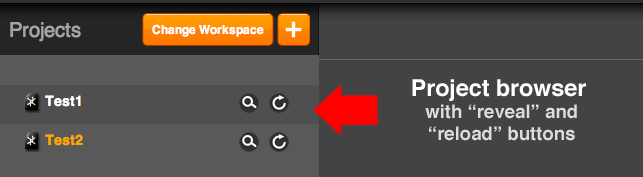

MoSync Reload is a tool for rapid development of mobile applications in HTML5 and JavaScript for iOS, Android and Windows Phone.
You can access native features such as camera, SMS, file system and sensors and create interfaces using real, native UI controls.
Reload lets you edit code on your PC, Mac or Linux machine and then instantly see the result of your changes on any number of devices or emulators. It’s just like pressing “reload” in a browser, but for native mobile apps!
Once you are happy with the application you’ve developed, you can use the free MoSync SDK to take your project as-is, and build standalone applications for distribution through App Store, Android Market and Windows Marketplace.
The Reload tool consists of three parts:
* In most cases it is the default browser on your machine. In Linux you can use your browser of choice and load the
To use Reload, you need to install the client app on one or more devices or emulators. In Reload your download, XCode and Visual Studio projects for iOS and Windows Phone are included, and an .apk file for Android. On mac, they are in folders on the DMG image. On PC, they’re in the directory you extracted your ZIP file to.
If you’re using an Android device or emulator, you need only to install the provided .APK on it.
For iOS or Windows Phone, you need to build the client from the provided XCode or Visual Studio project using the iOS SDK and/or the Windows Phone SDK, so you need them (or a friend with access to them).
Once you’ve installed the client on a device, you will not need access to the platform SDKs when using Reload. So, for instance, if you have an iPhone but no Mac, you only ask a Mac owner to build the application and install it on your phone, and then you can get on with development. However, in order to use emulators, you will need to have the platform SDKs installed.
Reload requires Node.js installed on your machine. On some Windows machines ReloadLuncher.exe might complain about node.js even if it was successfully installed. In this case change the environment variable created by the node.js installer from [insta_dir]\nodejs\ to [insta_dir]\nodejs (please notice the missing backslash from the later path).
Mac OSX
MoSync Reload supports Mac OS X 10.5+. On Mac you get a DMG image which includes a .app package which you can copy into the Application folder. Then all you need to do is to double click on the App to run it on your Mac.
When running Reload opens a log window for its server and the UI in your default browser.
Windows
On windows you receive a zip file that includes the clients and the executable file for the desktop interface. By double clicking on the executable it opens a command line shell with the server log and the UI in the default browser of your machine.
Note: if you downloaded the project files, they might be marked unsafe and blocked. If this is the case than trying to build the client will result in an error (mosyncRuntime.dll cannot be loaded) whose solution is in here. In short, unblock the mosyncRuntime.dll and any other file that cannot be found/loaded.
Linux
MoSync reload is tested on Ubuntu Linux 10.10+ and Kubuntu Linux 10.10+, and for certain functionalities is needs either GNOME or KDE on the development machine. To run Reload on linux you need an installation on Node.js 0.6 and newer (for installation instruction see Node’s Installation Manual) . On Linux you get a tarball with all the required files. To run Reload on Linux, extract the package then in a terminal go to the extracted folder and type:
#> ./reload
The shell script runs the server and shows the log on the same terminal window. then go to your favorite browser and navigate to the following address:
http://localhost:8282
To connect your clients to the Reload server you will need to have them connected to the same local network (WiFi). When running the Client you can type in the IP address for the server in the edit box. If you don’t know the address take a look at the UI under the “Network Info” to find the server information.

The HTML UI for Reload acts primarily as a management console which indexes your projects and lets you send them to the connected clients.

The project browser displays all the project located in your current workspace, which is simply a directory on your hard drive. By default, this will be a folder named MoSync_Reload_Projects under your home directory.
Changing workspace and creating new projects
There are two orange buttons at the top of the project browser toolbar. Use “Change Workspace” to make another directory on your hard drive be the project root.
There are two buttons on the right hand side of each project - a magnifying glass called “Reveal” and an arrow going in a circle called “Reload”:
 The “Reveal” button
The “Reveal” button
Clicking this button will open up the Explorer or Finder window that contains the project you selected. From there you can open the .js, .html and all other files and edit with your favorite editors.
 The “Reload” button
The “Reload” button
Clicking the “reload” button causes the selected project to be packaged and sent to the connected clients. All the files in the “LocalFiles” subdirectory of the project directory are bundled into a single file, which is then extracted on the device to the application’s local file system.
The tabs
The Reload UI contains three tabs - API Documentation, Network Info and Log Console:

Under this tab, you will find the documentation for the MoSync JavaScript APIs. They give you access to native features such as camera, sensors, file system, SMS and native UI controls.
Network Info
This tab displays the IP address of the server and which clients are currently connected.
Log Console
The log console shows JavaScript log messages and error on the console. Its purpose is to provide more convenience to your debugging experience when developing JavaScript/HTML apps. Currently it only works with Android phones (or the Android Emulator) and you need to have the phone connected to your development machine with a USB cable.